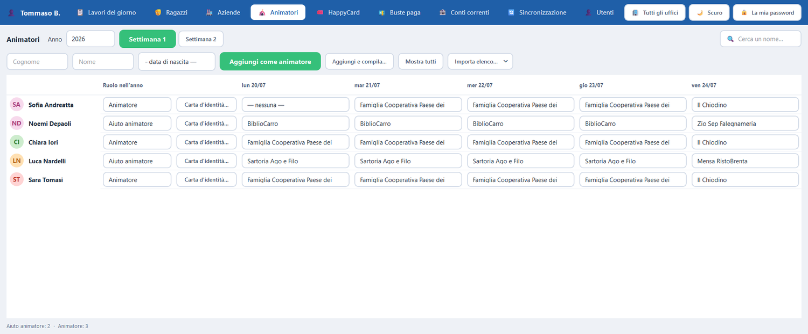

Chi manda avanti il gioco. Il ruolo appartiene all'edizione, non alla persona: lo stesso ragazzo è dipendente un anno e animatore quello dopo.
PdRManager — Animatori
{kind=link}

Che cosa fa che cosa
I comandi
| Comando | Che cosa fa |
|---|---|
| Aggiungi | Un animatore nuovo per l'edizione scelta. |
| Carta d'identità… | La stessa scheda dei ragazzi: la carta ce l'hanno anche loro. |
| Importa elenco… | Con il modello «animatori», che ha in più la colonna Ruolo. |
Dal primo clic
Come si fa, passo per passo
- Clicca sulla scheda «Animatori».
- In alto scegli l'edizione: il ruolo vale per quell'anno, non per sempre.
- Per aggiungerne uno, scrivi cognome e nome nella riga in alto e clicca «Aggiungi come animatore».
- Per stampargli la carta d'identità, clicca «Carta d'identità…» sulla sua riga: è la stessa scheda dei ragazzi.
- Attenzione: animatori e coordinatori non prendono la busta paga. Nelle Buste paga non compaiono, ed è voluto.
Se non funziona: Se un animatore compare anche nelle Buste paga, il suo ruolo è stato messo su un'altra edizione: controlla l'anno scelto in alto.